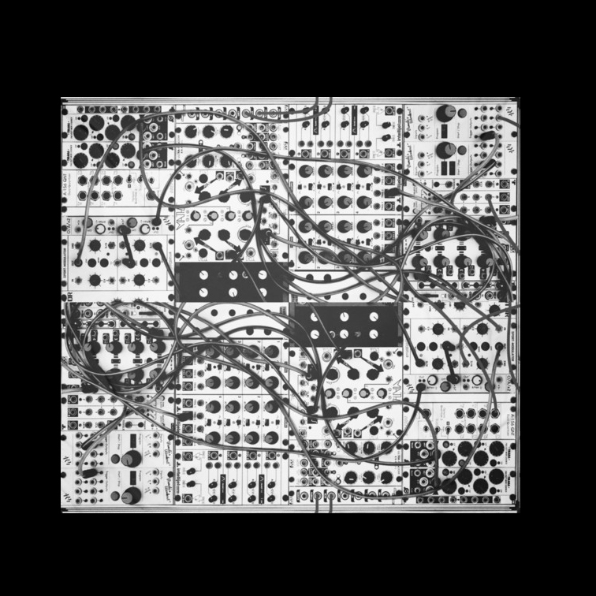

I’m a forth year architecture student, and I am learning web design for the first time. In the architecture realm, I’m mostly interested in fabrication, small details, and sustainble design. Also, being in the architecture program I had the opportunity to learn woodworking in the shop, and I like to build my own furniture.

Outside of architecture, I’m very passionate about analog photography. I like to try out vintage cameras, shooting film rolls, and developing them myself. I immensely enjoy the extensive long process of making a single image, and it helps me think about my work very differently. Recently, I got into making music and sound with modular synthesizers. The complexity and process of tranforming sound waves and voltages into rather beautiful melodies is something that I have been experimenting with recently.
I have multiple interest and hobbies. I hope that I would have a very versatile career in different realms: architecture, design, furniture, exhibition, photography, music, etc.